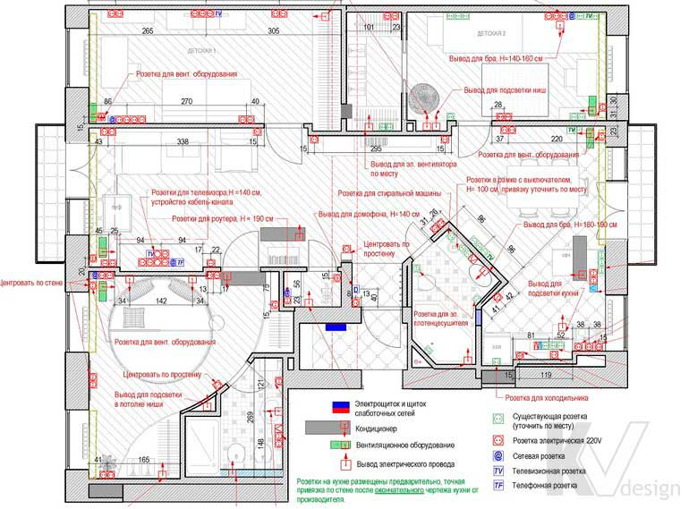

План размещения розеток, электровыводов и слаботочных сетей

Дане креслення необхідне не тільки будівельникам при проведенні монтажних робіт, а й для узгодження електропакета в різних інстанціях. На плані вказується розташування всіх розеток, електричних висновків і висновків слабкострумових мереж для кожного з приміщень квартири або будинку, з описом призначення того чи іншого виходу, висоти його розташування і прив'язки по стінах.
За бажанням замовника при коригуванні плану прибираються зайві розетки або додаються додаткові. На перший погляд кількість їх на подібному кресленні може здатися надмірною, проте в сучасному світі з його величезною різноманітністю побутових пристроїв і гаджетів наявність достатнього числа висновків електричних і слабкострумових мереж - питання комфорту. Крім того, план складається виходячи з відсутності трійників, подовжувачів і мережевих фільтрів, які в свою чергу підвищують навантаження на електромережі.